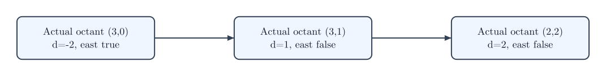
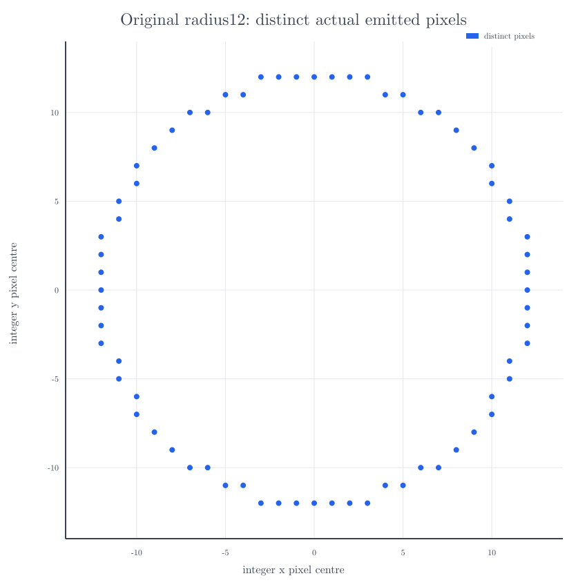
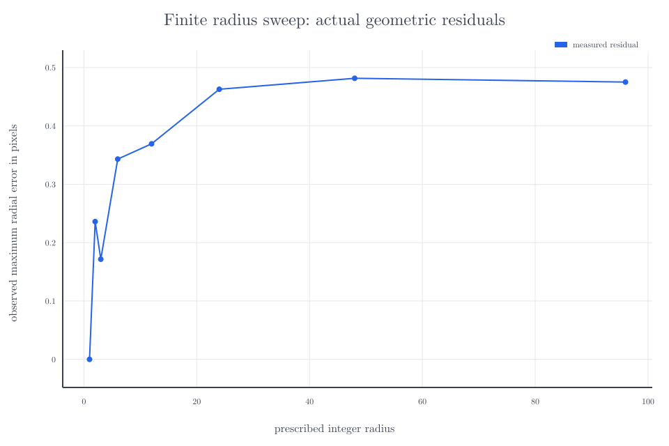
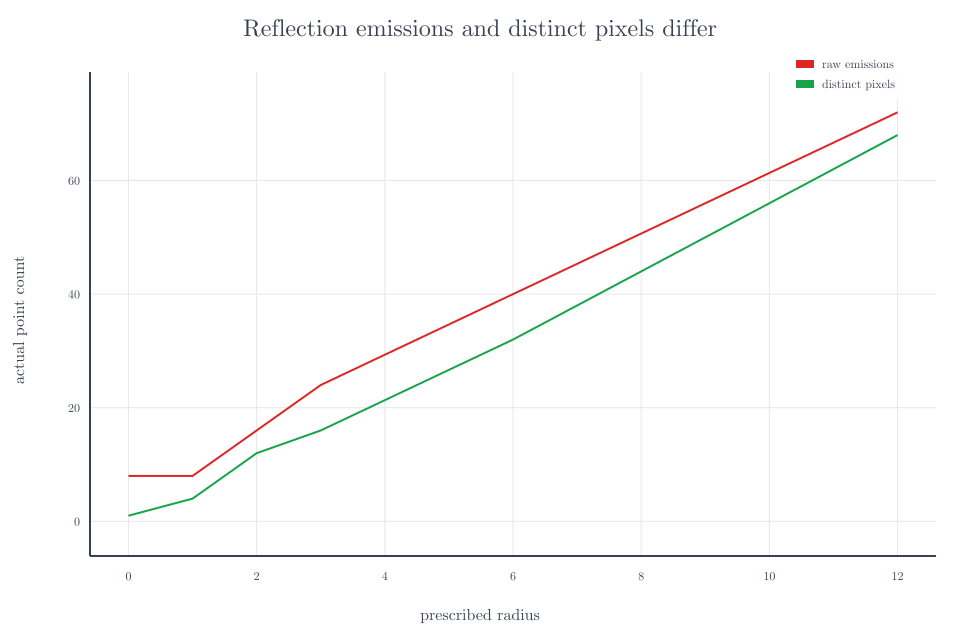

Midpoint circle rasterization
Abstract
Drawing an integer circle means choosing lattice pixels near a continuous circular boundary. We compute one octant with integer decisions and reflect its pixels eight ways. The report exposes actual transitions on a tiny radius, retains the original radius12 figure, distinguishes repeated emissions from distinct pixels, and measures radial errors without treating a finite sweep as a universal certificate.
From a midpoint test to an integer recurrence
Work in centre-relative coordinates with x initially r and y initially zero. The next octant pixel is either east in y, (x,y+1), or southeast, (x−1,y+1). Their separating midpoint is (x−1/2,y+1). Evaluate the circle’s implicit function there:
Initially d=1−r. Since x,y,r are integers, F is an integer plus1/4; F<0 exactly when d<0. An inside midpoint selects (x,y+1); otherwise select (x−1,y+1). After incrementing y, the east update adds2y+1; the southeast update decrements x then adds2(y−x)+1. These follow by subtracting the two quadratic expressions, so the producer requires additions and comparisons rather than square roots. It emits the current pixel before updating and stops when x<y.
Eight reflections cover all octants. Axis and diagonal reflections can coincide: the output is the original ordered emission sequence, including duplicates. Those duplicates do not indicate extra distinct pixels. This is a boundary rasterizer; it does not fill a disk, draw antialias coverage or connect a contour.
A tiny actual branch sequence
The native trace retains actual old integer states, selected branches, updated states and the start index of their eight real reflection emissions. The diagram reads the first three visited states of radius3.
#include <dm/dm.hpp>
int main() {
std::filesystem::create_directories("build");
auto t = dm::algorithms::midpoint_circle_trace(0, 0, 3);
std::print("| actual x | actual y | actual d | actual east branch | next x | next y | next d | first " "emission |\n| ---: | ---: | ---: | --- | ---: | ---: | ---: | ---: |\n");
for (auto &s : t.steps)
std::print("| {} | {} | {} | {} | {} | {} | {} | {} |\n", s.x, s.y, s.d,
s.east, s.x_after, s.y_after, s.d_after, s.first_point);
dm::graphics::Diagram d;
for (std::size_t i = 0; i < t.steps.size(); ++i) {
auto &s = t.steps[i];
d.node(std::to_string(i), {6. * i, 0},
std::format("Actual octant ({},{})\nd={}, east {}", s.x, s.y,
s.d, s.east));
if (i)
d.edge(std::to_string(i - 1), std::to_string(i));
}
d.save_svg("build/midpoint_circle_tiny.svg");
}| actual x | actual y | actual d | actual east branch | next x | next y | next d | first emission |
|---|---|---|---|---|---|---|---|
| 3 | 0 | -2 | true | 3 | 1 | 1 | 0 |
| 3 | 1 | 1 | false | 2 | 2 | 2 | 8 |
| 2 | 2 | 2 | false | 1 | 3 | 7 | 16 |

The original radius12
Retain the original centre(0,0) and radius12. The native study runs the canonical producer once, then sorts and deduplicates its actual output for geometric summaries. The figure has equal numeric x/y limits and a square drawable area so a circle remains circular. The error is measured with hypot on widened coordinate differences, avoiding the legacy x*x+y*y int overflow in diagnostics.
#include <dm/dm.hpp>
int main() {
std::filesystem::create_directories("build");
auto s =
dm::algorithms::midpoint_circle_study(0, 0,
dm::algorithms::midpoint_circle_demo_radius());
std::print("| actual quantity | value |\n| --- | ---: |\n| octant iterations | {} |\n| raw reflected " "emissions | {} |\n| distinct pixels | {} |\n| duplicate emissions | {} |\n| measured " "maximum radial error | {:.12f} |\n",
s.analysis.iterations, s.analysis.points.size(),
s.unique_points.size(), s.duplicate_emissions,
s.maximum_radial_error);
std::vector<double> x, y;
for (auto[px, py] : s.unique_points) {
x.push_back(px);
y.push_back(py);
}
auto p = dm::graphics::RPlot::create();
p.points(x, y, "distinct pixels");
p.size(850, 850).margins(95, 35, 60, 70).x_limits(-14, 14).y_limits(-14, 14).x_label("integer x pixel centre").y_label("integer y pixel centre").title("Original radius12: distinct actual emitted pixels").save_svg("build/midpoint_circle_original.svg");
}| actual quantity | value |
|---|---|
| octant iterations | 9 |
| raw reflected emissions | 72 |
| distinct pixels | 68 |
| duplicate emissions | 4 |
| measured maximum radial error | 0.369316876853 |

Measured geometry and limits of the experiment
The Euclidean residual of a pixel is the absolute difference between its centre distance and the requested radius. Raster decisions minimize a local midpoint choice; this finite experiment reports the measured maximum for each tested radius. It does not establish a theorem for every radius or a Hausdorff bound between filled shapes. A translated circle has the same widened relative coordinates and therefore the same measured residuals.
#include <dm/dm.hpp>
int main() {
std::filesystem::create_directories("build");
std::vector<double> x, y;
std::print("| prescribed radius | actual distinct pixels | measured max radial error |\n| ---: | ---: | " "---: |\n");
for (int r : {1, 2, 3, 6, 12, 24, 48, 96}) {
auto s = dm::algorithms::midpoint_circle_study(0, 0, r);
x.push_back(r);
y.push_back(s.maximum_radial_error);
std::print("| {} | {} | {:.12f} |\n", r, s.unique_points.size(),
s.maximum_radial_error);
}
auto p = dm::graphics::RPlot::create();
p.line(x, y, "measured residual", {37, 99, 235});
p.points(x, y, "", {37, 99, 235});
p.legend({"measured residual"}, {{37, 99, 235}});
p.x_label("prescribed integer radius").y_label("observed maximum radial error in pixels").title("Finite radius sweep: actual geometric residuals").save_svg("build/midpoint_circle_errors.svg");
}| prescribed radius | actual distinct pixels | measured max radial error |
|---|---|---|
| 1 | 4 | 0.000000000000 |
| 2 | 12 | 0.236067977500 |
| 3 | 16 | 0.171572875254 |
| 6 | 32 | 0.343145750508 |
| 12 | 68 | 0.369316876853 |
| 24 | 136 | 0.462795408120 |
| 48 | 272 | 0.481582517933 |
| 96 | 544 | 0.475134127286 |

Output counts, guards and storage
Each iteration increments y exactly once, so there are at most r+1 iterations for nonnegative radius and exactly eight raw emissions per iteration. Ordinary production takes O(r+1) time and O(1) state plus O(r+1) returned pixels. The study’s sorting/deduplication costs O(r log(r+1)) work and additional output; do not attribute that sorting cost to the rasterizer itself.
Decisions use signed64-bit arithmetic. Before any coordinate addition or capture, nonnegative radius requires all four bounding coordinates cx±r,cy±r to fit int; overflow throws. Negative radius preserves the original empty convention. Radius zero preserves eight coincident centre emissions rather than pretending there are eight distinct pixels. Its single step includes the actual final update even though no later pixel is emitted.
Optional capture admits three input scalars, then each actual complete iteration’s eight point records and one step record before emission. Its count is3+9 times the number of actual iterations. Default quota is one million; zero disables only that optional cap. Fields, capacities, runtime state and bytes are excluded. Exceeding admission throws without returning a partial trace. Neither a quota nor widened arithmetic guarantees a practical runtime for an enormous representable radius.
#include <dm/dm.hpp>
int main() {
std::filesystem::create_directories("build");
std::vector<double> x, raw, distinct;
std::print("| prescribed radius | actual iterations | actual raw emissions | distinct pixels | " "duplicate emissions | actual capture entries |\n| ---: | ---: | ---: | ---: | ---: | ---: " "|\n");
for (int r : {0, 1, 2, 3, 6, 12}) {
auto t = dm::algorithms::midpoint_circle_trace(0, 0, r);
auto s = dm::algorithms::midpoint_circle_study(0, 0, r);
x.push_back(r);
raw.push_back(t.analysis.points.size());
distinct.push_back(s.unique_points.size());
std::print("| {} | {} | {} | {} | {} | {} |\n", r,
t.analysis.iterations, t.analysis.points.size(),
s.unique_points.size(), s.duplicate_emissions,
t.captured_entries);
}
auto p = dm::graphics::RPlot::create();
p.line(x, raw, "raw emissions");
p.line(x, distinct, "distinct pixels", {22, 163, 74});
p.x_label("prescribed radius").y_label("actual point count").title(
"Reflection emissions and distinct pixels differ").save_svg(
"build/midpoint_circle_counts.svg");
}| prescribed radius | actual iterations | actual raw emissions | distinct pixels | duplicate emissions | actual capture entries |
|---|---|---|---|---|---|
| 0 | 1 | 8 | 1 | 7 | 12 |
| 1 | 1 | 8 | 4 | 4 | 12 |
| 2 | 2 | 16 | 12 | 4 | 21 |
| 3 | 3 | 24 | 16 | 8 | 30 |
| 6 | 5 | 40 | 32 | 8 | 48 |
| 12 | 9 | 72 | 68 | 4 | 84 |

Verification and references
Native tests independently evaluate the exact integer-scaled midpoint polynomial
for every visited state at radii0..1000, verify every reflected point in
original order, every pre/post decision, work/capture count, distinct set and
measured residual. They preserve the original72 raw emissions and observed
residual, test radius zero, negative input, exact quota boundaries and
translated near-int-boundary circles. Existing graphics regressions remain. The
shared ten-report batch passes 71 CTest cases, 29 directly instrumented
ASan/UBSan cases, 130 compiled and executed public examples, 598/598 scoped
documentation definitions and ten representative hovers. Independent Python
arbitrary-precision, hashlib, sorted-window, RNG, polynomial, graph and
full-assignment references verify 224,229 actual records. Frozen comparisons
preserve ordinary legacy outputs, including selected clique identities, original
density graphs and memetic partitions. Twelve checkout headers and twelve
identically installed headers compile independently; an installed-header native
consumer links and runs. All four complete programs and all four native figures
pass execution and visual review, and HTML/Markdown exports preserve computed
results and identical image bytes. Receipts:
build/mepml-conversion/batch-224-233/.
The midpoint circle derivation follows the standard treatment in Foley, van Dam, Feiner and Hughes, Computer Graphics: Principles and Practice. The report states its actual recurrence and derives the decision invariant explicitly; it does not claim a different rasterization or antialiasing algorithm. The original datamunge radius12 example is retained as the numerical baseline.